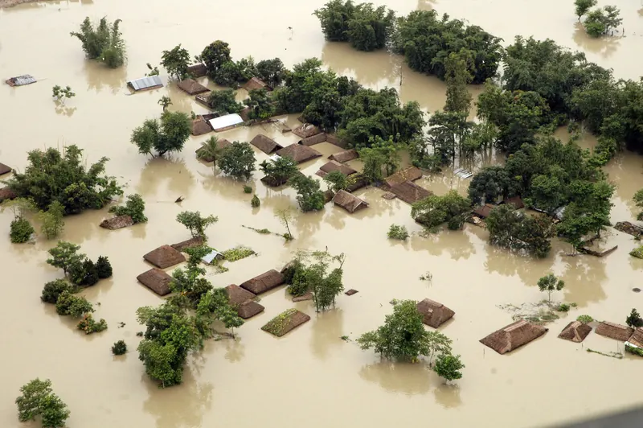
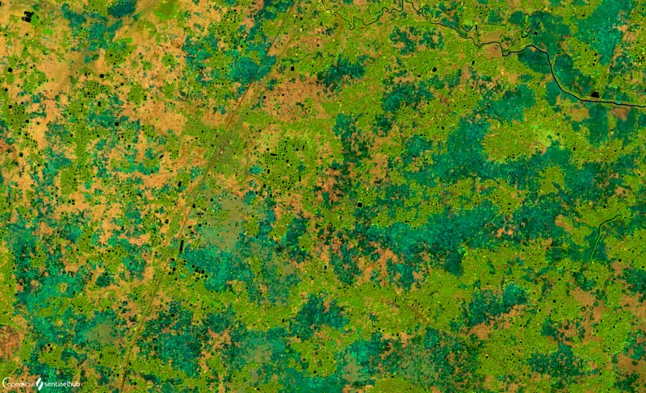
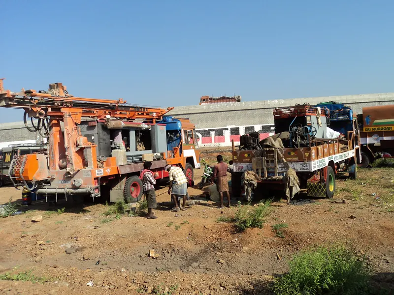
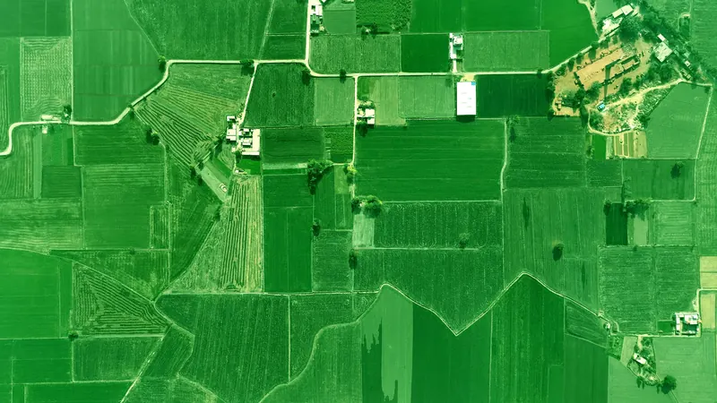
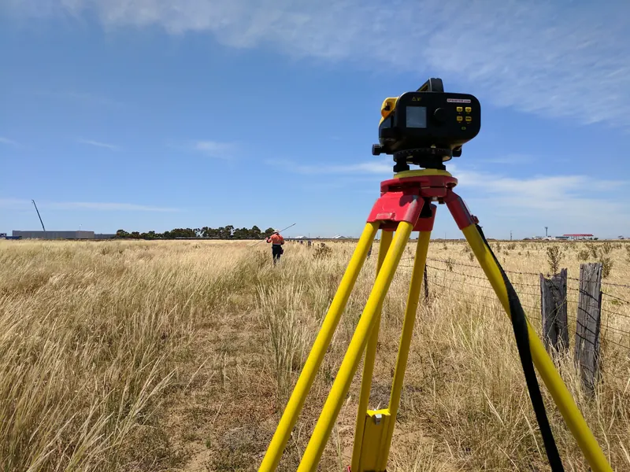
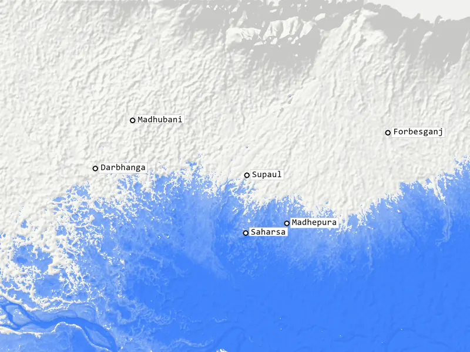
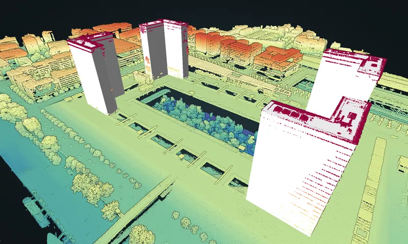

SolarSight: rooftop solar checks for Indian homes
A free tool that works out how much solar a rooftop can take. Enter your location, answer a few questions about your roof, and get a 7-page PDF report in under 2 minutes.
Read more
Products I'm building at Uday GeoAnalytics Consultancy (formerly Urban Geo Dynamics), and my work at Survey of India and DRDO.
A free tool that works out how much solar a rooftop can take. Enter your location, answer a few questions about your roof, and get a 7-page PDF report in under 2 minutes.
Read more

A flood early warning system for villages. AI writes the alerts and they go straight to village WhatsApp groups, so nobody has to install an app.
Read more

A deep learning pipeline that classifies land use and land cover across India. Trained on EuroSAT, it reaches 98.1% validation accuracy.
Read more

Estimates the chance that a borewell will succeed at a given spot. Built for farmers and groundwater planners, using free government geological, hydrogeological and remote sensing data.
Read more

A WhatsApp chatbot for India's Bhulekh land records. Send a plot number and get a plain-language summary of who owns the land.
Read more

Python scripts that download and prepare GNSS data from 1023+ reference stations. The data is then processed in GAMIT/GLOBK and PRIDE PPP-AR to centimeter-level accuracy.
Read more

Processing and checking High Precision Levelling data for the Geodesy & Research Branch: height datum computation, loop closure analysis and systematic error correction.
Read more

Mapping the areas that flood above a 1 m sea level rise, using terrain, elevation and drainage layers in QGIS.
Read more

An interactive web map of north Bihar. Move a slider to see which land lies below a chosen elevation, from public elevation data.
Open the map

Analysis of a dense LiDAR point cloud (about 3 million points) with Spectral Python, and Python scripts to clean and filter large LiDAR and hyperspectral datasets.
Read more
The photos show the kind of place or equipment each project deals with. They are not taken from the projects themselves.